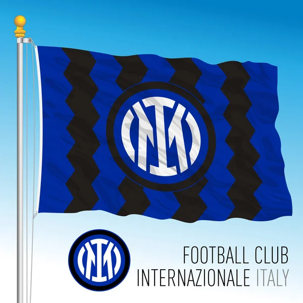

Historia y partidos favoritos
Historia y partidos favoritos
Club de futbol Inter Milan
Historia
25/01/2023
El Inter nació en un restaurante de Milán, L'Orologio (el reloj), un 9 de marzo de 1908, cuando un grupo de 43 militantes del Milan Cricket and Football Club, conocido como AC Milan en la actualidad, al mando de Mauricio Dealbera que diferían de los demás miembros del club en cuanto a no dejar participar en el equipo a jugadores extranjeros, es justamente este el motivo por el cual los socios fundadores del club deciden denominarlo el Internazionale, ya que su intención era incorporar no sólo a jugadores italianos sino también a extranjeros, muchos de los cuales eran suizos. Apenas dos años después de su creación, en 1910, el equipo consigue su primer scudetto, el cual estuvo rodeado de mucha polémica ya que al final del torneo se encontraba con igualdad de puntos frente al US Pro Vercelli, por lo cual se debía jugar un desempate en terreno del Vercelli, sin embargo este equipo se encontraba disputando un torneo militar en paralelo, y en ambos casos los rivales no quisieron aplazar las fechas de los partidos, por lo que el Vercelli opto por disputar el campeonato militar y enviar uno de sus equipos de las categorías inferiores, compuesto por niños de 11 años, en señal de protesta. El resultado del desempate fue una goleada de 10 goles a 3. Debido a la irrupción del Fascismo en Italia, el Inter, cuya máxima figura era Giuseppe Meazza, se vio forzado a realizar algunas modificaciones, entre las cuales debió cambiar de nombre ya que al Partido Nacional Fascista encontraba la denominación del club muy poco italiana y sobre todo con alusión a la Tercera Internacional Comunista, Internazionale en italiano. Por ello, en 1928 el Inter se fusiona con la Unión Deportiva de Milán y toma el nombre de Sociedad Deportiva Ambrosiana, en honor a San Ambrosio, patrono de la ciudad de Milán, por otro lado las tradicionales rayas verticales azules y negras de su camiseta deben cambiar a una cruz roja en un fondo blanco, reflejando el escudo de armas de la ciudad y haciendo referencia al símbolo del fascismo. Con los cambios encima el Inter consigue su segundo scudetto en 1930 y dos años después, debido a las constantes presiones de la dirigencia del club al mando de Ferdinando Pozzani así como y la insistente campaña de la hinchada nerazurra que en cada partido entonaba el coro "Forza Inter", la Federación de Fútbol Italiana permite que se adhiera la palabra Inter al nombre del equipo, quedando como Asociación Deportiva Ambrosiana - Inter, también se logró el retorno de los colores azul y negro en la camiseta. Esta nueva imagen presencio el alcance de dos nuevos scudettos, en 1938 y 1940, además de la primera Copa de Italia en 1939. Luego del período de suspensión de campeonatos por la Segunda Guerra Mundial, el FC Inter retorna con su nombre inicial y consigue su sexto campeonato en 1953, repitiendo el logro al año siguiente. El 28 de mayo de 1955, Angelo Moratti compra la sociedad por 100 millones de liras, dando inicio a la mejor época del club, llevando a que el equipo se denominara El Gran Inter, teniendo a figuras como Luis Suárez, Mario Corso, Giacinto Facchetti, Sandro Mazzola, Tarcisio Burgnich, Jair, Aristide Guarneri, Angelo Domenghini y el su legendario capitán Armando Picchi, que de la mano de Helenio Herrera obtendría los scudettos de 1963, 1965 y 1966.
San Siro
25/01/2023
El estadio se empezó a construir en 1925 en el distrito de San Siro. De ahí le viene uno de sus nombres. Años más tarde, en 1980, pasó a llamarse estadio Giuseppe Meazza, en reconocimiento al exjugador del Inter y del Milán. El estadio se construyó para el Milan pero desde 1947 también el Inter utiliza las instalaciones. El coliseo conserva actualmente los dos nombres. Lo llaman San Siro cuando el Milan disputa sus partidos y Giuseppe Meazza cuando juega el Inter. Con una capacidad para 80.018 personas, su estilo de arquitectura moderna es todo un símbolo para los habitantes de Milán. Además de partidos de fútbol, ha albergado eventos musicales, como conciertos de cantantes de la talla de Bob Marley, Bruce Springsteen o U2, finales de campeonatos de Europa de fútbol o campeonatos del mundo de boxeo.
 Investigacion
Investigacion
Inter de MilanMas que nada investigue sobre porque el club tuvo una muy mala racha hace unos 5 años, porque se me hacia ilogico que despues de ganar el triplete vendrian años oscuros para el equipo bueno en whatsapp tengo un grupo de fans del Inter Mexicanos o e habla hispana, les pregunte que porque habiamos tenido esa mala racha y me comentaron que fue debido a malas inversione en diferentes años y aparte unos muy malos entrenadores los que ponian a dirijir a este gran club y pues fue eso